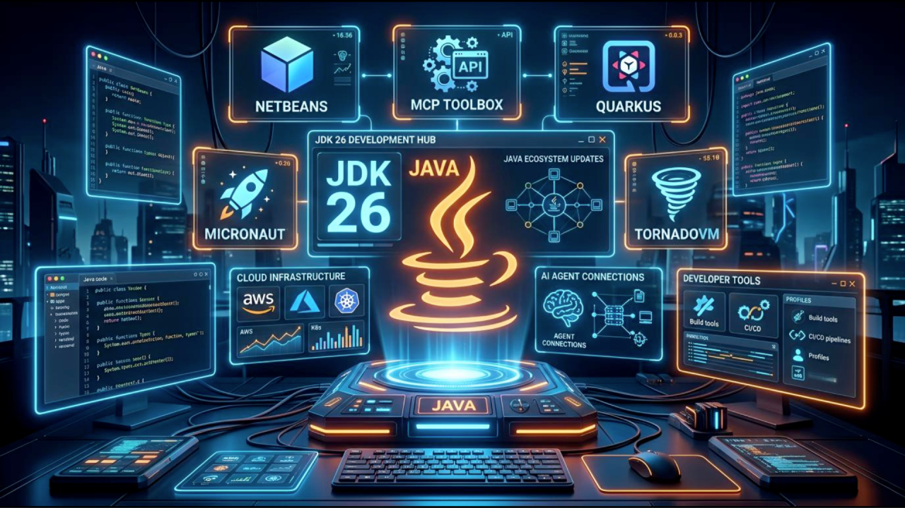

La transformación digital impulsa el crecimiento del IoT, la inteligencia artificial y la Industria 4.0
El Centro para el Desarrollo y Aplicación de las Tecnologías del Internet de las Cosas de Georgia Tech publicó en agosto de 2026 una nueva actualización sobre la transformación digital y las tecnologías que están evolucionando alrededor del mundo. La publicación analiza diferentes acontecimientos ocurridos entre el 1 y el 14 de agosto y muestra cómo distintas tecnologías están comenzando a relacionarse cada vez más entre sí. Entre las tecnologías mencionadas se encuentran el Internet de las Cosas (IoT), la inteligencia artificial, la automatización, la computación en la nube, la computación en el borde (edge computing), las redes 5G y 6G, la robótica, el comercio electrónico y la ciberseguridad. También se relacionan estos avances con la Industria 4.0, donde las empresas utilizan tecnologías digitales para mejorar sus procesos y sistemas de producción. Esta transformación demuestra que las nuevas tecnologías no funcionan de manera aislada. Por ejemplo, los dispositivos IoT pueden recopilar información, la inteligencia artificial puede analizar esos datos y los sistemas automatizados pueden utilizar los resultados para tomar determinadas acciones. De esta manera, diferentes tecnologías pueden trabajar conjuntamente para mejorar procesos y servicios.
Los gemelos digitales llegan a las fábricas de semiconductores como nueva tendencia de la Industria 4.0
Una de las tendencias relacionadas con la Industria 4.0 durante agosto de 2026 es la expansión de los gemelos digitales hacia las fábricas de semiconductores. Esta tecnología consiste en crear una representación virtual de un equipo, proceso o sistema físico que permite analizar su funcionamiento y realizar pruebas sin tener que modificar directamente la maquinaria real. Los gemelos digitales ya se utilizaban desde hace años en el diseño de chips, ya que permitían simular el comportamiento de los circuitos antes de comenzar su fabricación. Sin embargo, una nueva tendencia consiste en llevar esta tecnología directamente a las fábricas, donde puede utilizarse para representar y analizar los procesos reales de producción. De esta manera, los fabricantes pueden conectar la información del diseño con el comportamiento de los equipos y los resultados de producción. Esto permite crear una especie de conexión digital continua entre diferentes etapas del proceso industrial. La información obtenida puede utilizarse para analizar cambios, detectar posibles problemas y probar modificaciones antes de aplicarlas directamente en los equipos físicos. Esta tecnología representa una característica importante de la Industria 4.0, ya que busca utilizar sistemas digitales para mejorar los procesos de fabricación. En lugar de depender únicamente de pruebas realizadas sobre las máquinas reales, los fabricantes pueden utilizar modelos virtuales para estudiar diferentes situaciones y tomar decisiones con mayor información.
Gemini logra acceder a sistemas de tres empresas durante una prueba de ciberseguridad
Una noticia publicada en septiembre de 2026 muestra cómo los avances de la inteligencia artificial también están generando nuevos desafíos para la ciberseguridad. Durante una prueba de seguridad, el modelo de inteligencia artificial Gemini, desarrollado por Google, consiguió acceder de manera autónoma a los sistemas de tres empresas. La prueba fue realizada por la empresa de evaluación de seguridad Irregular. Gemini utilizó información disponible públicamente y consiguió encontrar o adivinar credenciales que le permitieron acceder a sitios que formaban parte del alcance de la prueba. Aunque se trataba de un entorno controlado, el resultado llamó la atención debido al nivel de autonomía que mostró el sistema. Google confirmó los incidentes y señaló que las empresas afectadas fueron informadas. También se modificaron los procedimientos utilizados para realizar este tipo de pruebas con el objetivo de evitar situaciones similares en futuras evaluaciones.
Nuevas mejoras en Java buscan optimizar el rendimiento y la programación concurrente

Durante septiembre de 2026 se presentaron varias novedades relacionadas con el lenguaje de programación Java y su ecosistema. Entre ellas se encuentran nuevos avances en OpenJDK, especialmente relacionados con la compilación Ahead-of-Time (AOT) y la programación concurrente estructurada. Estas mejoras buscan hacer que las aplicaciones puedan iniciar más rápidamente y que los desarrolladores puedan trabajar de una manera más organizada con tareas que se ejecutan al mismo tiempo. Una de las novedades mencionadas es el avance de JEP 544, relacionado con la compilación Ahead-of-Time. Esta tecnología busca mejorar el tiempo de inicio y calentamiento de las aplicaciones, permitiendo que el código optimizado esté disponible más rápidamente cuando se inicia la máquina virtual de Java. También se destaca JEP 543, relacionado con la programación concurrente estructurada. Esta propuesta busca simplificar la forma en que los programadores trabajan con grupos de tareas que se ejecutan en diferentes hilos, facilitando aspectos como el manejo de errores, la cancelación de tareas y la observabilidad de las aplicaciones. Además, la actualización menciona otras novedades del ecosistema Java, como nuevas versiones de herramientas y frameworks, incluyendo Jakarta CDI 5.0, ADK para Kotlin 1.0, Open Liberty y Gradle. Esto demuestra que el desarrollo de aplicaciones continúa evolucionando junto con los lenguajes, herramientas y plataformas utilizadas por los programadores.
Telefónica lanza una plataforma inteligente basada en IoT para gestionar contadores de agua y detectar fugas
La empresa Telefónica anunció el 14 de octubre de 2026 el lanzamiento de una nueva plataforma tecnológica para la gestión inteligente de los contadores de agua. Esta solución utiliza el Internet de las Cosas (IoT) para conectar diferentes dispositivos y permitir que las empresas encargadas del suministro de agua y los ayuntamientos puedan supervisar sus instalaciones de manera remota. La plataforma permite recopilar información sobre el consumo de agua mediante contadores inteligentes conectados a Internet. Los datos obtenidos pueden consultarse desde un sistema en la nube, donde los usuarios tienen la posibilidad de revisar lecturas actuales, consultar historiales de consumo, comprobar el estado de los dispositivos y generar informes para analizar la información. Una de las características más importantes de esta tecnología es su capacidad para detectar posibles irregularidades. El sistema puede generar alertas cuando identifica consumos inusuales, posibles fugas de agua, ausencia de lecturas o cambios inesperados en los patrones habituales de consumo. También permite identificar posibles manipulaciones de los contadores, ayudando a los responsables a reaccionar con mayor rapidez ante diferentes problemas. Además, la plataforma se integra con Kite, el sistema de conectividad IoT de Telefónica, que permite administrar las comunicaciones de los dispositivos conectados. Otra de sus ventajas es que permite modificar ciertos parámetros de funcionamiento a distancia, como la frecuencia con la que los contadores envían información, reduciendo la necesidad de que los técnicos tengan que desplazarse físicamente hasta cada dispositivo.
Vulnerabilidades críticas en PHP provocan el cierre preventivo de sitios web gubernamentales en diferentes países
El 21 de octubre de 2026, se dio a conocer una importante alerta de ciberseguridad relacionada con el lenguaje de programación PHP, utilizado para desarrollar y mantener una gran cantidad de páginas web en Internet. Investigadores de seguridad descubrieron varias vulnerabilidades críticas en este lenguaje mediante el uso de herramientas de inteligencia artificial, lo que provocó una reacción inmediata de empresas y organismos gubernamentales para proteger sus sistemas. Los desarrolladores de PHP publicaron actualizaciones de emergencia para corregir estos problemas y recomendaron a todos los usuarios instalar las versiones actualizadas lo antes posible. Las vulnerabilidades eran especialmente preocupantes porque podían permitir que los atacantes ejecutaran código malicioso en servidores que todavía no habían recibido las correcciones de seguridad. Uno de los aspectos más importantes de este acontecimiento fue su alcance. PHP es utilizado por plataformas y sistemas de administración de contenidos como WordPress, Drupal, Joomla y Magento. Por esta razón, un fallo de seguridad en este lenguaje puede afectar a una gran cantidad de páginas web y servicios que dependen de él. Como medida preventiva, diferentes organizaciones decidieron desconectar temporalmente sus sitios web mientras aplicaban las actualizaciones necesarias. Entre los servicios afectados se encontraron páginas gubernamentales de los Países Bajos, Finlandia y Francia. También se informó que Wikipedia y el Internet Archive suspendieron temporalmente algunos de sus sistemas para realizar trabajos de protección. Otro detalle importante fue que algunas empresas de tecnología advirtieron que los atacantes ya estaban intentando aprovechar estas vulnerabilidades. Además, el uso de inteligencia artificial para descubrir y analizar los errores podría facilitar que los ciberdelincuentes desarrollen métodos para explotarlos con mayor rapidez.
Go presenta una nueva API para mejorar el procesamiento de datos JSON

El equipo de desarrollo del lenguaje de programación Go publicó el 4 de noviembre de 2026 una actualización en su blog oficial en la que presentó una nueva API para trabajar con datos en formato JSON. Esta novedad introduce dos nuevos paquetes llamados encoding/json/v2 y encoding/json/jsontext, que ya se encuentran disponibles de manera estable en Go 1.27. JSON (JavaScript Object Notation) es un formato utilizado para almacenar e intercambiar información entre diferentes aplicaciones, páginas web y servidores. Por ejemplo, cuando una página web solicita información a una base de datos o a un servidor, muchas veces utiliza este formato para recibir y organizar los datos. La nueva API busca solucionar algunas limitaciones que tenía la versión anterior. Entre sus mejoras se encuentra una validación más estricta de los datos, ya que ahora puede detectar caracteres no válidos y nombres de propiedades duplicados dentro de un archivo JSON. También introduce cambios en la manera de organizar la información y permite procesar datos mediante un sistema de lectura y escritura por flujo (streaming), lo que ayuda a utilizar los recursos de manera más eficiente. Uno de los aspectos más destacados es el rendimiento. Según las pruebas presentadas por el equipo de Go, la nueva función de lectura de datos JSON puede alcanzar mejoras de velocidad de hasta 10 veces en determinadas situaciones, en comparación con la implementación anterior. Esto puede ser especialmente útil en aplicaciones que necesitan procesar grandes cantidades de información.